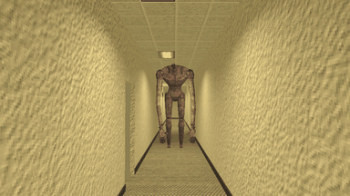

Tutorials › Make a Monster That Waits at the End of the Corridor
How to Make a Monster That Waits at the End of the Corridor in Godot 4
A monster that backs away as you walk at it, still facing you, and follows when your back is turned, always at the same distance.

Most monsters run at you. This one waits at the end of the corridor: walk toward it and it backs away, still facing you; turn your back and it follows, and when you look again it is still there, at its distance. One script on any CharacterBody3D with a NavigationAgent3D: it asks whether the camera sees it, then backs away, follows or stands and watches.
Script: corridor_watcher.gd (MIT) · Godot 4.3 or newer · its folder on GitHub
How to use it
- Put
corridor_watcher.gdon your monster'sCharacterBody3D, with aNavigationAgent3Dchild named "NavigationAgent3D" and a collision shape. - Put your player in the group "player", its
Camera3Dthe current camera. - Set
near, the distance it keeps while you watch it, andfar: farther than that it comes for you whether you look or not. - If the model has an
AnimationPlayerwith Idle, Walk and Retreat (a walk played backwards), they play.
What it needs
- Godot 4.3 or newer (the Compatibility renderer is enough).
- A navigation mesh for it to follow along (straight at you where there is none), and a player in the group "player" with the current camera.
Try it free
Liminal PSX Entities' free demo, on its page, has Nape on the Overtime floor; the Watcher is in the pack. The code works on any CharacterBody3D of yours.
How it was tested
In Godot 4.3 and 4.7.2 on a stand-in body in a straight corridor: a collider on your own body (a held torch) does not hide it; seen and approached, it backs away and keeps its distance; it never comes closer while watched; unseen, it follows.
The code
class_name CorridorWatcher
extends CharacterBody3D
## How to Make a Monster That Waits at the End of the Corridor in Godot 4
## Cordatix Godot 4 PSX tutorials, MIT licensed: https://github.com/GoldenSparrow-Dev/cordatix-godot-psx-tutorials
## Written for: https://cordatix.itch.io/liminal-psx-entities
## A monster that waits at the end of the corridor, in Godot 4.3+. While you can see it and come closer than `near`,
## it backs away, still facing you; while your back is turned it follows, up to `near`; farther than `far` it follows
## whether you look or not. It never comes closer while you watch it.
## Give it a NavigationAgent3D child named "NavigationAgent3D" and a collision shape; put the player in the group
## "player" (its Camera3D is the current camera). If the model has an AnimationPlayer with "Idle", "Walk" and "Retreat"
## (a walk played backwards), they play; Liminal PSX Entities' Watcher has all three.
@export var near := 7.0
@export var far := 12.0
@export var walk_speed := 0.9
@export var retreat_speed := 0.7
## The heights (m) where it checks whether the camera sees it: its chest and its head.
@export var look_points: Array[float] = [1.2, 2.4]
var player: Node3D
var anim: AnimationPlayer
var phase := ""
var gravity: float = ProjectSettings.get_setting("physics/3d/default_gravity", 9.8)
@onready var agent: NavigationAgent3D = $NavigationAgent3D
func _ready() -> void:
player = get_tree().get_first_node_in_group("player") as Node3D
anim = find_child("AnimationPlayer", true, false) as AnimationPlayer
func is_seen() -> bool:
## Seen: one of its look points is inside the camera's view, and nothing stands between the camera and it.
var cam := get_viewport().get_camera_3d()
if cam == null:
return false
var space := get_world_3d().direct_space_state
for h in look_points:
var at: Vector3 = global_position + Vector3.UP * h
if not cam.is_position_in_frustum(at):
continue
var q := PhysicsRayQueryParameters3D.create(cam.global_position, at)
var skip: Array[RID] = [get_rid()] # itself and the player's own body are not in the way
if player is CollisionObject3D:
skip.append((player as CollisionObject3D).get_rid())
q.exclude = skip # set the whole list: the getter returns a copy
if space.intersect_ray(q).is_empty():
return true
return false
func _physics_process(delta: float) -> void:
if player == null:
return
var to := player.global_position - global_position
to.y = 0.0
var d := to.length()
var seen := is_seen()
var move := Vector3.ZERO
if seen and d < near:
phase = "retreat" # back away, still facing them
move = -to.normalized() * retreat_speed
elif (not seen and d > near) or d > far:
phase = "follow" # along the navigation mesh, to them
agent.target_position = player.global_position
var next := agent.get_next_path_position()
var step := next - global_position
step.y = 0.0
if step.length() < 0.05:
step = to # no navigation mesh: straight at them
move = step.normalized() * walk_speed
else:
phase = "watch"
_play({"retreat": "Retreat", "follow": "Walk", "watch": "Idle"}[phase])
if d > 0.1:
look_at(Vector3(player.global_position.x, global_position.y, player.global_position.z), Vector3.UP)
velocity.x = move.x
velocity.z = move.z
velocity.y = 0.0 if is_on_floor() else velocity.y - gravity * delta
move_and_slide()
func _play(clip: String) -> void:
if anim and anim.has_animation(clip) and anim.current_animation != clip:
anim.play(clip, 0.2)
The devlog and the pack
The step-by-step walkthrough comes as a devlog on itch.io on 7 December 2026; this page is the tutorial until then. It is written for Liminal PSX Entities, a PS1-style asset pack by Cordatix for Godot 4, Unity, Unreal and Blender.